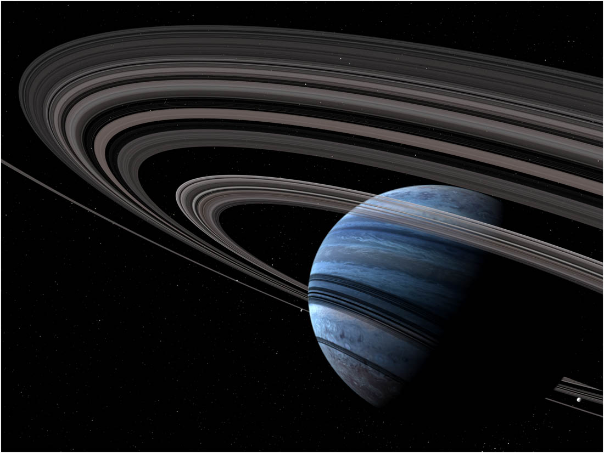

Welcome to the Exoplanet Info Getter! Search a planet to learn more about it or click through our other pages to explore the wonderful world (or worlds :) of exoplanets.
An exoplanet is a planet that is not in our solar system. To this date, NASA has confirmed the existance of 5,528 exoplanets, with more being discovered daily. Our website contains information about almost all of these, so explore to your heart's content.
In addition to being cool, scientists study exoplanets to look for ones that could support life, either to find extraterrestrials or a future home for us. Potentially habitable planets reside within their star' "Goldilocks Zone."
Life, as we know it, requires liquid water. And for water on a planet to remain liquid, that planet has to reside within a certain distance from the star it's orbiting. If it's too close, all water on it boils. If it's too far, all water freezes. Thus, the distance has to be just right- and that's why scientists have dubbed the range of such distances the "Goldilocks Zone."